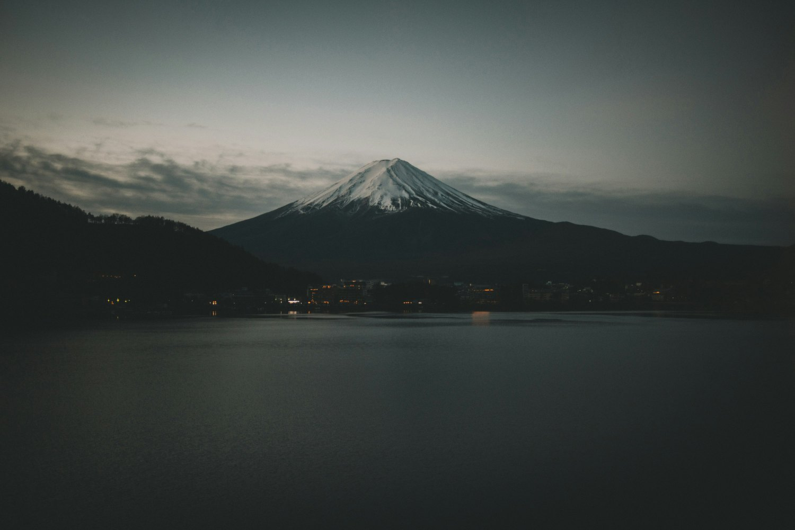
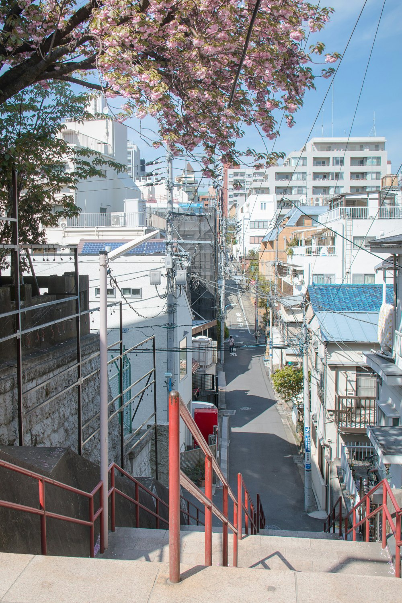

Bold
studies
— effects × pictures
Round 2. Dithering, topography and type baked directly into your photographs — font-on-picture, RETRO-style. Four integration moves to react to.
01
Dither-mix · type on photo
sky dissolves into 1-bit dither + contours · title sits in the negative space, multiply-blended onto the mountain

FUJI
Kawaguchiko
BLUE HOUR · DITHERED 8×8 · CONTOURS · ⓒ CLAY BANKS
DOT · PAPER / 003,776 M
02
Duotone riso · bold word
whole frame dithered into a two-ink riso (red + slate) · heavy lowercase type in the water, misregistered
itsukushima · miyajima
vol. ∞ — 2026 edition
鳥居
torii
ⓒ nicki eliza
riso duotone
03
Full dither · vertical poster
portrait frame fully dithered · stacked display type, outline + solid, difference-blended labels and kanji

location · tokyo
04 / 2026
坂道
DOWN
HILL
PB · 0451 · TOKYO · ∞
04
Photo-in-type · clip mask
the dithered photograph lives inside the letterforms · type-as-window on paper, contours behind
NIPPON
PHOTO-ESSAY №04
FUJI · CHURETO PAGODA
35.40N 138.80E
The photograph is the fill of the type — dithered, clipped, and set on bare paper. ⓒ manuel cosentino.